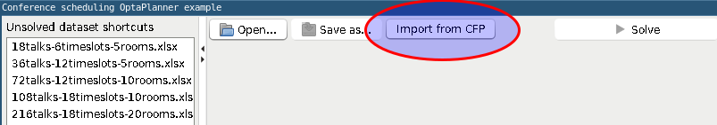
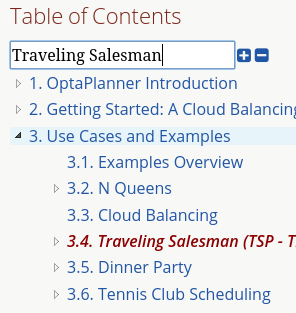
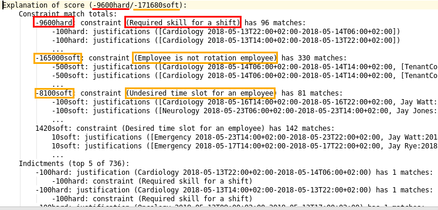
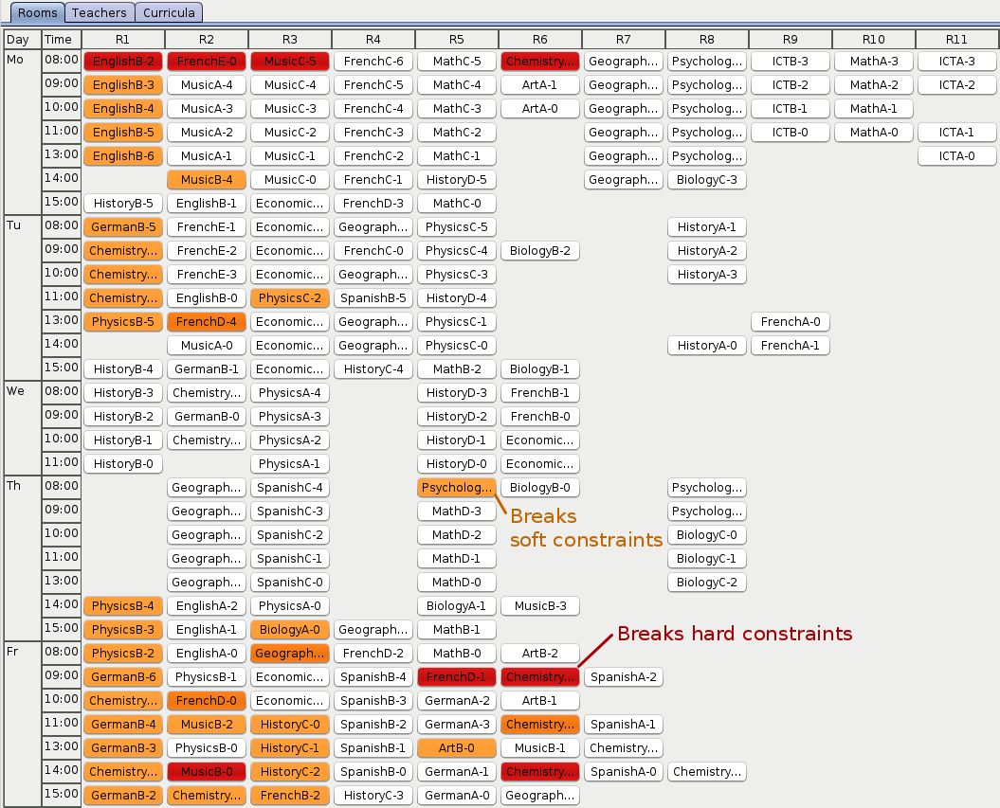
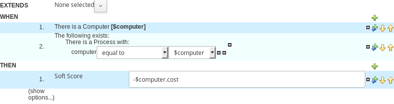

java -jar optaweb-vehicle-routing-standalone-7.36.0.Final.jar \
--app.persistence.h2-dir=$HOME/.optaweb-vehicle-routing/db \
--app.routing.gh-dir=$HOME/.optaweb-vehicle-routing/graphhopper
--app.routing.osm-dir=$HOME/.optaweb-vehicle-routing/openstreetmap \
--app.routing.osm-file=belgium-latest.osm.pbf \
--app.region.country-codes=BE
Release Notes 7
We are happy to announce a 7 Final release of OptaPlanner. OptaPlanner is a lightweight, embeddable planning engine written in Java™ to solve AI constraint optimization problems efficiently. Use cases include Vehicle Routing, Employee Rostering, Maintenance Scheduling, Task Assignment, School Timetabling, Cloud Optimization, Conference Scheduling and many more.
Status of OptaPlanner
- Stable: Lots of unit, integration and stress tests
- Reliable: Used across the world in production
- Scalable: To billions of constraint matches with minimal RAM and CPU time
- Documented: Read the detailed reference manual and the many examples
- Open Source: Apache License 2.0
Note for Red Hat Decision Manager customers
The RHDM version differs from the OptaPlanner version:
| RHDM version | OptaPlanner version |
|---|---|
| 7.8 | 7.39 |
| 7.9 | 7.44 |
| 7.1 | 7.48 |
| 7.11 | 8.5 (and 7.52) |
| 7.12 | 8.11 (and 7.59) |
New and noteworthy: Engine 7.39.0.Final
More deprecations
In this release, we continue deprecating some rarely used methods for which there are now better alternatives. We encourage everyone to check out our updated upgrade recipe to adapt accordingly.
New and noteworthy: Engine 7.38.0.Final
Deprecation effort
With this release, we are deprecating some rarely used methods for which there are now better alternatives. We encourage everyone to check out our updated upgrade recipe to adapt accordingly.
That said, we remain committed to our existing API compatibility guarantees and we will not remove any of the deprecated APIs on the 7.x stream of OptaPlanner.
New and noteworthy: Engine 7.37.0.Final
Run script for OptaWeb Vehicle Routing
The run script automates setup steps that would otherwise have to be carried out manually and simplifies the run command.
Before:
After:
./runLocally.sh belgiumTo learn more about the run script, read the documentation or watch this video:
New and noteworthy: Engine 7.36.0.Final
Constraint Verifier allows for unit testing Constraint Streams
We have introduced the Constraint Verifier API, allowing you to easily test constraints developed using the Constraint Streams API. Consider the following constraint:
protected Constraint horizontalConflict(ConstraintFactory factory) {
return factory
.fromUniquePair(Queen.class, equal(Queen::getRowIndex))
.penalize("Horizontal conflict", SimpleScore.ONE);
}The following example uses the Constraint Verifier API to create a simple unit test for the preceding constraint stream:
private ConstraintVerifier<NQueensConstraintProvider, NQueens> constraintVerifier
= ConstraintVerifier.build(new NQueensConstraintProvider(), NQueens.class, Queen.class);
@Test
public void horizontalConflictWithTwoQueens() {
Row row1 = new Row(0);
Column column1 = new Column(0);
Column column2 = new Column(1);
Queen queen1 = new Queen(0, row1, column1);
Queen queen2 = new Queen(1, row1, column2);
constraintVerifier.verifyThat(NQueensConstraintProvider::horizontalConflict)
.given(queen1, queen2)
.penalizesBy(1);
}New and noteworthy: Engine 7.34.0.Final
Various improvements to constraint streams
We have added several new constraint collectors: toList(), toSet(), toSortedSet(), toMap() and toSortedMap().
Also, the min() and max() collectors have been extended to BiConstraintStream, TriConstraintStream` and
QuadConstraintStream as well.
To use these collectors, look for the ConstraintCollectors class.
More examples now support constraint streams
With recent improvements to the constraint streams API, we have been able to add ConstraintProvider implementations
to more and more examples.
This release brings constraint stream support to the following examples: investment, machinereassignment and
scrabble.
New and noteworthy: Engine 7.33.0.Final
Conditional propagation in constraint streams
The constraint streams API continued to evolve, gaining support for conditional propagation. The following example penalizes computers which have at least one process running:
private Constraint runningComputer(ConstraintFactory constraintFactory) {
return constraintFactory.from(CloudComputer.class)
.ifExists(CloudProcess.class, Joiners.equal(Function.identity(), CloudProcess::getComputer))
.penalize("runningComputer",
HardSoftScore.ONE_SOFT,
computer -> ...);
}Note the use of the ifExists() building block. Conversely, the ifNotExists() building block is also available.
New and noteworthy: Engine 7.32.0.Final
SolverManager
A SolverManager is a facade for one or more Solver instances
to simplify solving planning problems in REST and other enterprise services.
Its solve(…) methods differ from the normal Solver.solve(…) method:
-
SolverManager.solve(…)returns immediately: it schedules a problem for asynchronous solving without blocking the calling thread. This avoids timeout issues of HTTP and other technologies. -
SolverManager.solve(…)solves multiple planning problems of the same domain, in parallel.
SolverManager supports batch solving, but also live solving that shows progress to the end-user, for example:
public class TimeTableService {
private SolverManager<TimeTable, Long> solverManager;
// Returns immediately, ok to expose as a REST service
public void solve(Long timeTableId) {
solverManager.solveAndListen(timeTableId,
// Called once, when solving starts
this::findById,
// Called multiple times, for every best solution change
this::save);
}
public TimeTable findById(Long timeTableId) {...}
public void save(TimeTable timeTable) {...}
public void stopSolving(Long timeTableId) {
solverManager.terminateEarly(timeTableId);
}
}Spring Boot starter
OptaPlanner now includes a Spring Boot starter out of the box.
This avoids common pitfalls in the Spring ecosystem (such as classloading)
and enables application.properties to overwrite the solver configuration:
# The solver runs for 30 seconds. To run for 5 minutes use "5m" and for 2 hours use "2h".
optaplanner.solver.termination.spent-limit=30sIn fact, a solverConfig.xml file is no longer needed on Spring Boot.
The starter automatically detects @PlanningSolution and @PlanningEntity annotations,
so the solver config XML file is optional, used only for rare use cases that do power tweaking.
Furthermore, it automatically injects a SolverManager, SolverFactory and/or SolverConfig in your code:
public class TimeTableController {
@Autowired
private SolverManager<TimeTable, Long> solverManager;
@PostMapping("/solve")
public void solve() {
solverManager.solveAndListen(...);
}
...
}To use the starter with Maven, add this dependency to your pom.xml file:
<dependency>
<groupId>org.optaplanner</groupId>
<artifactId>optaplanner-spring-boot-starter</artifactId>
</dependency>For Gradle, add this dependency to your build.gradle file:
implementation "org.optaplanner:optaplanner-spring-boot-starter"For more information on how to use this starter, read the detailed guide on spring.io.
groupBy() support for constraint streams of bi, tri and quad cardinality
The constraint streams API improved further.
You can now modify your streams using the groupBy() building block.
OpenShift support for both OptaWeb applications
To run OptaWeb Vehicle Routing or OptaWeb Employee Rostering on OpenShift, use the new script in their distribution zips:
./runOnOpenShift.shOptaWeb distribution and documentation
Two new tabs for OptaWeb Employee Rostering and OptaWeb Vehicle Routing have been added to Download and Documentation pages.
Go to Download and switch to Employee Rostering or Vehicle Routing tab to download a full distribution.
Go to Documentation and switch to Employee Rostering or Vehicle Routing tab to access documentation.
New and noteworthy: Engine 7.31.0.Final
QuadStreams
The constraint streams API received a major update, introducing support for streams of 4 facts. Please refer to constraint streams documentation for details.
New and noteworthy: Engine 7.28.0.Final
OptaPlanner Web Examples are no more
The optaplanner-webexamples module was removed from distribution and the Git repository.
It has been superseded by OptaWeb Vehicle Routing.
New and noteworthy: Engine 7.27.0.Final
Pillar moves are faster
PillarSwapMove and PillarChangeMove improved under the hood and are now faster. We observed increases in throughput
of around 5 %. Your mileage may vary.
Sequential sub pillars
PillarSwapMove and PillarChangeMove now support sequential sub pillars, bringing better scores on examples with
clear entity succession, such as employee shift rostering. The simplest configuration of sequential sub pillars looks
like this:
<pillar...MoveSelector>
<subPillarType>SEQUENCE</subPillarType>
</pillar...MoveSelector>For more information, please refer to Documentation.
New and noteworthy: Engine 7.20.0.Final
Programmatic API made more convenient
The programmatic API now supports a more fluent form too, because of the new with*() methods:
solverFactory.getSolverConfig().withTerminationConfig(
new TerminationConfig().withMinutesSpentLimit(userInput));Other
-
@PlanningIdis now supported on primitive types such asintorlongtoo, not just wrapper classes. -
Instant,Duration,Periodand other temporal classes injava.timecan now be used as planning values in multithreaded solving.-
Because they are now compatible with
ScoreDirector.lookUpWorkingObject().
-
New and noteworthy: Workbench 7.15.0.Final
The KIE Workbench (which includes OptaPlanner support) has been renamed to Business Central.
New and noteworthy: Engine 7.14.0.Final
Weight parametrization standardized as @ConstraintConfiguration and @ConstraintWeight
Deciding the correct weight and level for each constraint is difficult. It often involves negotiating with different stakeholders and their priorities. Furthermore, quantifying the impact of soft constraints is often a new experience for business managers, so they’ll need a number of iterations to get it right.
So don’t hard-code the constraint weights. Put them in a new constraint configuration class:
@ConstraintConfiguration
public class ConferenceConstraintConfiguration {
@ConstraintWeight("Theme track conflict")
private HardMediumSoftScore themeTrackConflict = HardMediumSoftScore.ofSoft(10);
@ConstraintWeight("Content conflict")
private HardMediumSoftScore contentConflict = HardMediumSoftScore.ofSoft(100);
...
}Here, the theme track conflict constraint has a default weight of 10soft
and the content conflict constraint of 100soft.
When we expose these properties in a UI, the business manager can change those numbers,
based on negotiations with the different stakeholders.
In DRL, call the new reward() and penalize() methods to change the score
by the constraint weight (optionally multiplied a match weight parameter):
rule "Theme track conflict"
when
...
then
scoreHolder.penalize(kcontext);
end
rule "Content conflict"
when
...
then
scoreHolder.penalize(kcontext, ...);
endConference Scheduling devoxx-cfp importer
Devoxx and Voxxed organizers can now import conference data directly from the CFP REST API,
just by specifying the conference instance’s api url
(e.g. http://dvbe18.confinabox.com/api/conferences/dvbe18 for Devoxx Belgium 2018).
OptaPlanner will then take care of importing all the data and you can start solving and generating
the schedule right away.

Other
-
JDK 11 compatibility improved
-
The minimum required version to build and run remains Java 8 for the foreseeable future.
-
New and noteworthy: Engine 7.13.0.Final
Other
-
Score corruption analysis fixed for multithreaded incremental solving.
New and noteworthy: Engine 7.12.0.Final
Unimproved termination now supports a score difference threshold
Optionally, configure a score difference threshold by which the best score must improve in the specified time.
For example, if the score doesn’t improve by at least 100 soft points every 30 seconds or less, it terminates:
<localSearch>
<termination>
<unimprovedSecondsSpentLimit>30</unimprovedSecondsSpentLimit>
<unimprovedScoreDifferenceThreshold>0hard/100soft</unimprovedScoreDifferenceThreshold>
</termination>
</localSearch>Other
-
Important bugfixes for multithreaded incremental solving, especially with chained variables.
New and noteworthy: Engine 7.9.0.Final
Multithreaded incremental solving
OptaPlanner can now solve one dataset (without partitioning) with multiple threads to take advantage of multiple CPU cores.
Even with just a few CPU cores, it triples the score calculation speed:

Multithreaded incremental solving is easy to activate.
Just add a <moveThreadCount> line in your solver config:
<solver>
<moveThreadCount>4</moveThreadCount>
...
</solver>This basically donates 4 extra CPU cores to the solver.
Use AUTO to have OptaPlanner deduce it automatically.
Optionally, specify a <threadFactoryClass> for environments that don’t like arbitrary thread creation.
For more information about the complex challenges behind this feature, read this blog post.
Documentation: table of contents (TOC) improvements
The TOC is now collapsed by default for a better overview.
Use the new search field to find a phrase in the TOC:

New and noteworthy: Engine 7.8.0.Final
Solver.explainBestScore()
To make it easier to understand why a solution is infeasible during development
(before the UI makes use of the ConstraintMatch API),
use explainBestScore() after solving:
EmployeeRoster solution = solver.solve();
System.out.println(solver.explainBestScore());For example, it might print:

New and noteworthy: Engine 7.7.0.Final
@PlanningPin to pin down planning entities
To pin down an assignment and force OptaPlanner to leave it untouched,
simply add the @PlanningPin annotation on a planning entity’s boolean property
and make it true for those that are immovable:
@PlanningEntity
public class Lecture {
private boolean pinned;
...
@PlanningPin
public boolean isPinned() {
return pinned;
}
...
}This is syntactic sugar for the more flexible and more verbose movableEntitySelectionFilter.
New and noteworthy: Engine 7.6.0.Final
New example: Conference Scheduling
Assign each conference talk to a timeslot and a room.
Timeslots can overlap. Read/write to/from an *.xlsx file that can be edited with LibreOffice or Excel too.
Hard constraints:
-
Talk type of timeslot: The type of a talk must match the timeslot’s talk type.
-
Room unavailable timeslots: A talk’s room must be available during the talk’s timeslot.
-
Room conflict: Two talks can’t use the same room during overlapping timeslots.
-
Speaker unavailable timeslots: Every talk’s speaker must be available during the talk’s timeslot.
-
Speaker conflict: Two talks can’t share a speaker during overlapping timeslots.
-
Speaker required timeslot tag: If a speaker has a required timeslot tag, then all his/her talks must be assigned to a timeslot with that tag.
-
Talk required timeslot tag: If a talk has a required timeslot tag, then it must be assigned to a timeslot with that tag.
-
Speaker required room tag: If a speaker has a required room tag, then all his/her talks must be assigned to a room with that tag.
-
Talk required room tag: If a talk has a required room tag, then it must be assigned to a room with that tag.
Soft constraints:
-
Theme track conflict: Minimize the number of talks that share a same theme tag during overlapping timeslots.
-
Sector conflict: Minimize the number of talks that share a same sector tag during overlapping timeslots.
-
Content audience level flow violation: For every content tag, schedule the introductory talks before the advanced talks.
-
Audience level diversity: For every timeslot, maximize the number of talks with a different audience level.
-
Language diversity: For every timeslot, maximize the number of talks with a different language.
-
Speaker preferred timeslot tag: If a speaker has a preferred timeslot tag, then all his/her talks should be assigned to a timeslot with that tag.
-
Speaker undesired timeslot tag: If a speaker has an undesired timeslot tag, then all his/her talks should not be assigned to a timeslot with that tag.
-
Talk preferred timeslot tag: If a talk has a preferred timeslot tag, then it should be assigned to a timeslot with that tag.
-
Talk undesired timeslot tag: If a talk has an undesired timeslot tag, then it should not be assigned to a timeslot with that tag.
-
Speaker preferred room tag: If a speaker has a preferred room tag, then all his/her talks should be assigned to a room with that tag.
-
Speaker undesired room tag: If a speaker has an undesired room tag, then all his/her talks should not be assigned to a room with that tag.
-
Talk preferred room tag: If a talk has a preferred room tag, then it should be assigned to a room with that tag.
-
Talk undesired room tag: If a talk has an undesired room tag, then it should not be assigned to a room with that tag.
Open the benchmark report automatically
PlannerBenchmark has a new method benchmarkAndShowReportInBrowser()
to automatically open the benchmark report in the default browser after the benchmark has finished.
Other engine improvements
-
Support for cloning arrays: a solution or planning entity field can now be an array
New and noteworthy: Engine 7.5.0.Final
New algorithm: Variable Neighborhood Descent
Variable Neighborhood Descent is useful for certain use cases with a limited scale. To use it, configure it like this:
<localSearch>
<localSearchType>VARIABLE_NEIGHBORHOOD_DESCENT</localSearchType>
</localSearch>New and noteworthy: Engine 7.3.0.Final
Benchmark a solver configuration quickly
There isn’t a valid excuse anymore to not use the benchmarker. You can now run it in just a few lines of Java code (no XML code):
SolverFactory<TennisSolution> solverFactory = SolverFactory.createFromXmlResource(...);
// Set up the benchmarkFactory in 1 line (no XML)
PlannerBenchmarkFactory benchmarkFactory = PlannerBenchmarkFactory.createFromSolverFactory(
solverFactory);
// Fetch or generate your input problem(s)
TennisSolution problem1 = generateProblem1();
TennisSolution problem2 = generateProblem2();
...
// Run the benchmark
PlannerBenchmark plannerBenchmark = benchmarkFactory.buildPlannerBenchmark(problem1, problem2, ...);
plannerBenchmark.benchmark();This builds and runs a vanilla benchmark that gives insight in the performance and scalability of your implementation. To get more insight, switch to the XML configuration.
New and noteworthy: Workbench 7.3.0.Final
Guided decision tables integration
OptaPlanner now integrates with the Guided decision table editor.
Modify the score with a build-in OptaPlanner actions that can be accessed in the Action BRL fragment column type.
New and noteworthy: Execution Server 7.2.0.Final
Real-time planning
The KIE Server now exposes an interface to update a problem dataset while the solver is running.
Use Java client or REST interface to submit your ProblemFactChange implementations.
Java Client
void addProblemFactChange(String containerId,
String solverId,
ProblemFactChange problemFactChange);
void addProblemFactChanges(String containerId,
String solverId,
List<ProblemFactChange> problemFactChange);
Boolean isEveryProblemFactChangeProcessed(String containerId,
String solverId);REST API
The following methods are now supported:
-
POST
/containers/containerId/solvers/solverId/problemfactchanges -
GET
/containers/containerId/solvers/solverId/problemfactchanges/processed
New and noteworthy: Engine 7.1.0.Final
Construction Heuristic power tweaking made simpler
It’s now easier to power tweak the Construction Heuristic’s move selectors if desired. This especially useful to improve scaling for use cases with multiple planning variables.
For example, in course scheduling this will first assign a period to lecture and then a room to a lecture (instead of the combination of both which is the default behaviour):
<constructionHeuristic>
<constructionHeuristicType>FIRST_FIT_DECREASING</constructionHeuristicType>
<changeMoveSelector>
<valueSelector variableName="period"/>
</changeMoveSelector>
<changeMoveSelector>
<valueSelector variableName="room"/>
</changeMoveSelector>
</constructionHeuristic>This means that it will evaluate a lot less moves, resulting in a Construction Heuristic that end much quicker at the cost of solution quality (which Local Search can usually make up for in the time gained).
New and noteworthy: Workbench 7.1.0.Final
Guided decision table integration example
The Workbench examples now include the dinnerparty project, which uses a Guided decision table to define score constraints.
New and noteworthy: Engine 7.0.0.Final
Java 8 or higher
OptaPlanner 7.x now requires Java 8 or higher to run. The 6.x releases remain compatible with Java 6 or higher.
The API and implementation now make use of Java 7 and Java 8 features (such as lambdas).
Multithreaded partitioned search
OptaPlanner now has out of the box support for solving a single dataset by partitioning across multiple threads. So it makes use of multiple CPU cores for a single problem.
Partitioned Search can implement geo-fencing for Vehicle Routing use cases. For example, we can split up Great Britain into 4 parts and solve those parts separately:
This can potentially reduce solution quality, but for big datasets (usually above 5000 entities) the performance gains normally outweighs the long-term quality loss, because when a result is needed within hours or less, the solution quality is still higher.
Especially for Construction Heuristics, it can deliver an initial, feasible solution in a fraction of the time. For example, we’ve benchmarked a 30 time speed increase by partitioning Construction Heuristics in 4 parts running on 4 CPU cores, on an 8 core machine for a dataset with 4800 entities and 1200 planning values. This speed is attributed not just to the utilization of more CPU cores (at most a times 4 increase), but mainly to the problem search space size reduction per part thread.
Partitioned Search is configured like any other solver phase:
<solver>
...
<partitionedSearch>
<!-- The SolutionParititioner splits a dataset into parts -->
<solutionPartitionerClass>...CloudBalancePartitioner</solutionPartitionerClass>
<!-- Optionally configure which phase to run on each part -->
<constructionHeuristic>...</constructionHeuristic>
<localSearch>...</localSearch>
</partitionedSearch>
</solver>There is support to limit the number CPU cores OptaPlanner consumes (to avoid CPU starving other processes and thread)
through runnablePartThreadLimit. Furthermore, it is also possible to configure a threadFactoryClass.
For now, you still need to implement the SolutionPartitioner interface,
but we’ll add out of the box strategies (such as geo-fencing) soon:
public interface SolutionPartitioner<Solution_> {
List<Solution_> splitWorkingSolution(ScoreDirector<Solution_> scoreDirector, Integer runnablePartThreadLimit);
}Heat map to visualize the score
To explain a score in your UI, use the Indictment API to visualize the broken constraints:

Call ScoreDirector.getIndictmentMap() to extract the score per planning entity:
Map<Object, Indictment> indictmentMap = guiScoreDirector.getIndictmentMap();
for (Lecture lecture = courseSchedule.getLectureList()) {
Indictment indictment = indictmentMap.get(lecture);
if (indictment != null) {
// The score impact of that lecture
Score scoreTotal = indictment.getScoreTotal();
...
}
}It’s even possible to break it down further, to see which specific constraints that lecture actually triggered.
No longer needed to implement the Solution interface
Your solution class no longer needs both have the @PlanningSolution annotation and implement the Solution interface.
No need to repeat yourself anymore.
The Solution interface is now deprecated (but still works for backwards compatibility):
only the @PlanningSolution annotation suffices.
Instead of implementing the old interface methods, annotate your Score getter with @PlanningScore.
If you’re using Drools score calculation, annotate all problem fact getters (or fields)
with @ProblemFactCollectionProperty or @ProblemFactProperty.
@PlanningSolution
public class CloudBalance {
private List<CloudComputer> computerList;
...
private HardSoftScore score;
@ValueRangeProvider(id = "computerRange")
@ProblemFactCollectionProperty
public List<CloudComputer> getComputerList() {...}
@PlanningScore
public HardSoftScore getScore() {...}
public void setScore(HardSoftScore score) {...}
}Solving hasn’t changed:
SolverFactory<CloudBalance> solverFactory = SolverFactory.createFromXmlResource(...);
Solver<CloudBalance> solver = solverFactory.buildSolver();
CloudBalance solvedCloudBalance = solver.solve(unsolvedCloudBalance);Contributed by Lukáš Petrovický.
No longer needed to define the score type in the solver configuration
Planner now picks it up automatically from the domain model.
New JAXB and Jackson support and improved XStream support
To marshall a Score from or to XML or JSON, use the appropriate binder
for XStream, JAXB or Jackson in optaplanner-persistence-xstream, optaplanner-persistence-jaxb and optaplanner-persistence-jackson.
These will create pretty XML:
<CloudBalance>
...
<score>0hard/-200soft</score>
</CloudBalance>And beautiful JSON:
{
...
"score":"0hard/-200soft"
}See the documentation on how to configure them.
New module optaplanner-test with JUnit testing support
To test each score rule individually, to assure it does what the business expects it to do,
use the new ScoreVerifier support classes in optaplanner-test.
New example: Task assigning
Assign tasks to employee and take into account required skills, affinity with the customer and task priority. This example also demonstrates real-time producing and consuming of tasks.
Other Engine improvements
-
Chained entities (used in Vehicle Routing) can now be immovable entities too
-
Booleans are now supported by
ValueRangeFactorytoo:createBooleanValueRange() -
Dates and time are now supported by
ValueRangeFactorytoo:createTemporalValueRange(). Contributed by Kevin Wallis. -
@ValueRangeProvidernow supports methods that return an array too. -
The log now outputs the score calculation speed for each solver phase too.
-
The documentation is now in AsciiDoc, which improves output quality and makes it easier to contribute.
-
HardMediumSoftBigDecimalScore: 3 score levels of BigDecimal scores. Contributed by Brad Hards. -
Score.toShortString(): simplifies0hard/0medium/-7softto-7soft -
Fairness / load balancing: Tennis example now shows how to give them a scalable weight against other constraints
-
A planning solution’s fields/getter can now be automatically get their annotations through
@PlanningSolution(autoDiscoverMemberType = …) -
The public API is now a solid foundation for the 7.x years.
New and noteworthy: Workbench 7.0.0.Final
Enhanced solver editor
OptaPlanner Solver editor screen now supports adding all termination types, including composite termination. Phase configuration section allows to tweak Construction Heuristic settings and select Local Search algorithm to optimize your planning problem.
Guided rule editor integration
OptaPlanner now integrates with the Guided rule editor. Modify the score with a build-in OptaPlanner action.

Improved example import dialog
Examples are now part of the Workbench and they work offline too. Leverage tag-based filtering to quickly access projects from the field you are interested in.
Difficulty comparator definition
OptaPlanner domain editor can now specify a planning entity difficulty. Navigate through the object hierarchy and define the sorting attributes. Several Construction Heuristic algorithms use this information to construct a better initial solution.
Other Workbench improvements
-
OptaPlanner Workbench now fully supports bendable score types
-
It is no longer required to define
plannermgmtrole for the Workbench user to access OptaPlanner UI items. Use a role-based permission management screen instead to control the access. -
Two new examples have been added:
-
A course scheduling example models lecture scheduling at universities.
-
Employee rostering example optimizes task assigning to employees based on their skill.
-
New and noteworthy: Execution Server 7.0.0.Final
Simplified REST API
ServiceResponse wrapper has been removed from OptaPlanner service responses returned by KIE Execution Server.
This allows an easier processing of the responses on the client side.
<solver-instance>
...
<status>SOLVING</status>
<score scoreClass="org.optaplanner.core.api.score.buildin.hardsoft.HardSoftScore">0hard/-10soft</score>
<best-solution class="curriculumcourse.curriculumcourse.CourseSchedule">
...
</best-solution>
</solver-instance>Upgrade your code to 7
The best and easiest way to upgrade to this new version of OptaPlanner is by following the upgrade recipe.
New features in older releases
Read the previous release notes to learn about the new and noteworthy in previous releases.
Latest release
-
Wed 8 December 2021
Paid support and consulting
Want to talk to the experts? Red Hat offers certified binaries with enterprise consulting. Contact optaplanner-info for more information.
Upcoming events
-
Brno, Czech Republic (virtual) - Fri 28 January 2022
- Artificial Intelligence on Quarkus: I love it when an OptaPlan comes together by Geoffrey De Smet
-
Stockholm, Sweden - Mon 7 February 2022
- AI maintenance scheduling with OptaPlanner on Quarkus by Geoffrey De Smet
Latest blog posts
-
Tue 26 October 2021
Radovan Synek
-
Thu 14 October 2021
Walter Medvedeo
-
Tue 12 October 2021
Christopher Chianelli
-
Tue 5 October 2021
-
Wed 15 September 2021
Geoffrey De Smet
-
Thu 19 August 2021
Lukáš Petrovický
-
Mon 26 July 2021
Latest videos
-
AI lesson scheduling on Quarkus with OptaPlanner
Thu 18 November 2021
-
Maintenance scheduling
Fri 12 November 2021
-
Optimized order picking in warehouses and supermarkets
Tue 26 October 2021
-
A modern OO/FP constraint solver
Tue 14 September 2021
-
Business processes task optimization in Kogito
Tue 7 September 2021
-
School timetable optimization
Mon 6 September 2021
-
Schedule incoming calls real-time
Mon 23 August 2021